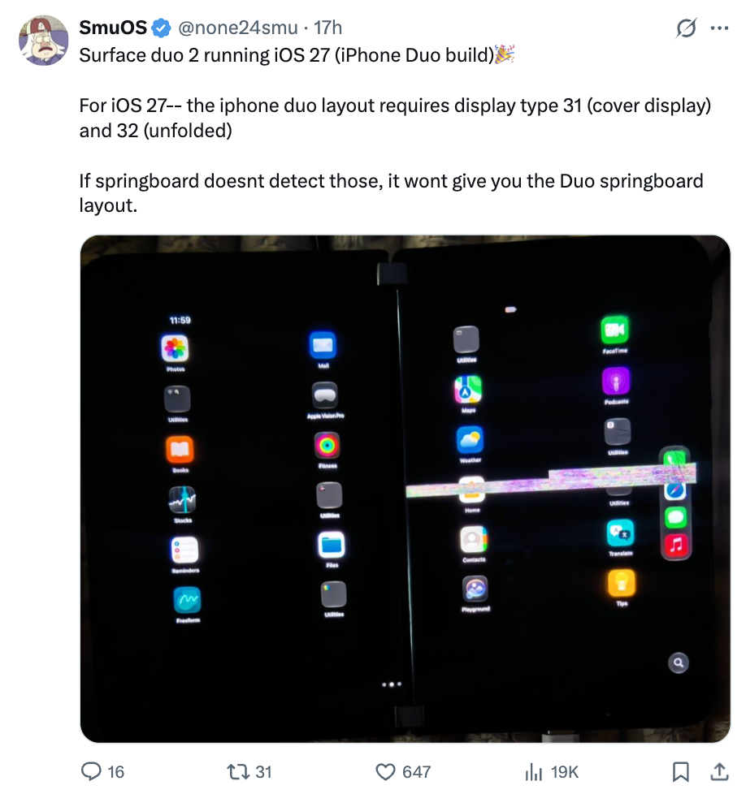

THE TECH EDIT
기술의 변화, 매일 한눈에.
카메라 · 스마트폰 · AI, 해외 테크 소식을 모아 전합니다.
최근 발행2026-10-31
새로 들어온 소식
LATEST STORIES

최신 뉴스
전체 4,041개 기사
주머니 속 스포츠 라이브 제어 콘솔: Apple iPhone Duo 등 4분할 화면으로 경기 시청 지원

OPPO의 6.35인치 바 타입 스마트폰, 내년 첫 신제품은 하이엔드 플래그십 라인, 이후 경량 카메라 스마트폰으로 확대 고려

OPPO 고위 임원 새 분장: 리빙중 해외 시장 총괄, 인원광 스마트폰 제품 총괄

OnePlus 16 vs OPPO Find X10: 스냅드래곤 성능인가, 200MP 카메라 성능인가?

이재: OnePlus 16과 OnePlus Ace 7 Pro, 2026년 안드로이드 스마트폰 첫 판매량 1위와 2위 석권

모토로라 Signature 27 스마트폰 11월 5일 출시 공식 발표, GrapheneOS 사전 설치 여부가 최대 관건

iPhone Duo, 첫 주 활성화 판매량 약 12만 5천 대 기록, Apple 주간 판매량 TOP 5 석권

iOS 27.2 단축어 확장: Apple 최초 폴더블 아이폰 듀오, 개폐 시 자동화 작업 트리거 가능

Huawei, Mate 90 시리즈 스마트폰의 샤오이(Xiaoyi) 업그레이드 공식 발표, 100개 이상의 앱에 기억 및 트리거형 AI 기능 통합

화웨이의 차세대 폴더블폰, 50MP RYYB 망원 렌즈와 Kirin 9050 Pro 탑재 가능성
Huawei 창샹 100 Pro Max 스마트폰, NearLink E2.0 스타플래시 오디오 기능 지원 확인
Honor 700 및 Honor 700 Pro, 망원 확장 기능과 후면 디스플레이 지원 전망

Fujifilm: 전 세계 240개 이상의 생산 기지, Apple iPhone Duo의 폭발적인 수요 충족에 자신
중국 상륙함, 새로운 돌파구 마련! 첫 함재 정찰·공격 겸용 스텔스 무인기 "공격-21", 쓰촨함에서 첫 이착륙 성공

천리우: Nova Lake, Intel 하이엔드 데스크톱 CPU 제품군 공백 채울 것, 14A 공정 Coral Rapids는 AMD EPYC와 경쟁

더 나은 길을 닦다: 개발자가 Microsoft Surface Duo 2에서 iPhone Duo 전용 Apple iOS 27 시스템을 성공적으로 부팅

Apple iPhone 듀오 출시 후: HSBC 홍콩, "신제품 출시 기간, 해커의 신용카드 도용 주의" 경고
우크라이나 전장에 AI 기관총 포탑 투입, 고속 드론 정밀 요격 가능

꿈은 죽지 않는다: 개발자, 윈도우 폰의 죽음 거부하고 AI로 마이크로소프트 루미아 640용 새 앱 개발
Apple CarPlay, Claude 연동으로 운전 중에도 AI 음성 질문 가능

Apple, 데이터 엔지니어링 기업 Ascend.io 인수하며 AI 기술 확장
검색 결과가 없습니다
다른 검색어를 입력하거나 필터를 초기화해 보세요.